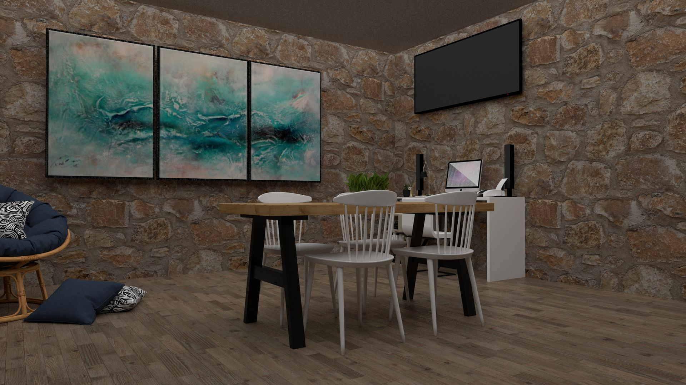

Mono Ofis
04 / 04
PROJE ÜZERİNE
Çalışmaya alan,
düşünmeye mesafe.
Mono Ofis, ortak çalışma ile bireysel odaklanma arasında esnek bir düzen önerir. Toplantı ve üretim alanları, kapalı koridorlar yerine açık geçişlerle birbirine bağlanır.
Mevcut taş yüzeyler korunurken ahşap ve yalın mobilyalar mekâna sıcaklık kazandırır. Gereksiz bölücülerden arındırılmış plan, ekiplerin değişen çalışma alışkanlıklarına uyum sağlar.
MALZEME PALETİ
Doğal taş / Meşe / Fırçalanmış metal
Yalın bir bütün, birbirini tamamlayan yüzeyler.